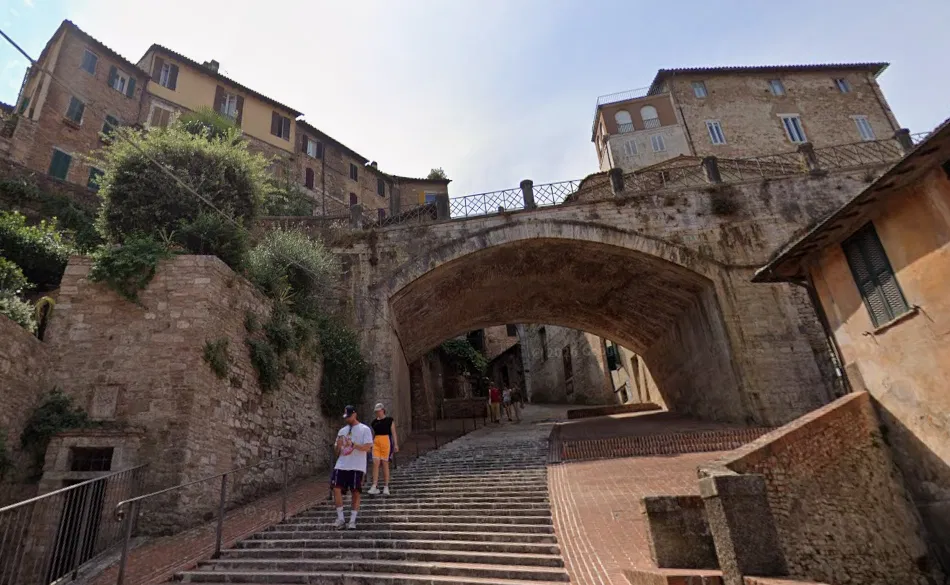

Starting from the Challenge

The challenge requires identifying the city, country, and daylight-saving time-zone abbreviation from a single street photograph. The image centers on stone steps, old buildings, and a brick arch. I compared the stairs, arch, and surrounding building layout with candidate photographs.
1. Choosing visual details for comparison
I used the direction and width of the stairs, the overhead brick arch, green shutters, and the relative positions of the railing and building walls as comparison points. These features needed to match together to distinguish the exact location from similar tourist photographs.
2. Testing the first candidate
I initially saw a similar photograph of Italian stairs and guessed Corinaldo. The problem asks for 'the time standard that place follows while daylight saving time is in effect' and says, 'For the time standard, use its standard abbreviation.'
Q: Does that wording ask for Italy's standard winter time or its daylight-saving time?
Italy uses CEST(Central European Summer Time, UTC+2) while daylight saving time is in effect, so I submitted InIt{CORINALDO_ITALY_CEST}, but it was rejected.
3. Matching Via dell’Acquedotto in Perugia
After the failed submission, I compared the original image with photographs of Corinaldo again and found that the details of the stairs and surrounding buildings did not match closely enough. Perugia's Via dell’Acquedotto, found through reverse image searching and landmark comparison, matched the direction of the stairs, the arch, the green shutters, and the railing layout. Perugia's municipal location guide also confirmed that the location is in Perugia, Italy.
I changed the city to Perugia, kept the country and time zone, and submitted InIt{PERUGIA_ITALY_CEST}. It was marked Correct.
Final Flag
InIt{PERUGIA_ITALY_CEST}
Summary
- Visual match: The stair direction, brick arch, green shutters, and railings match Via dell’Acquedotto.
- Location: The street is in Perugia, Italy.
- Time zone: Italy uses CEST while daylight saving time is in effect.
- Challenge photograph
- Compare structural details
- Via dell’Acquedotto
- Perugia, Italy
- CEST
- Format the flag